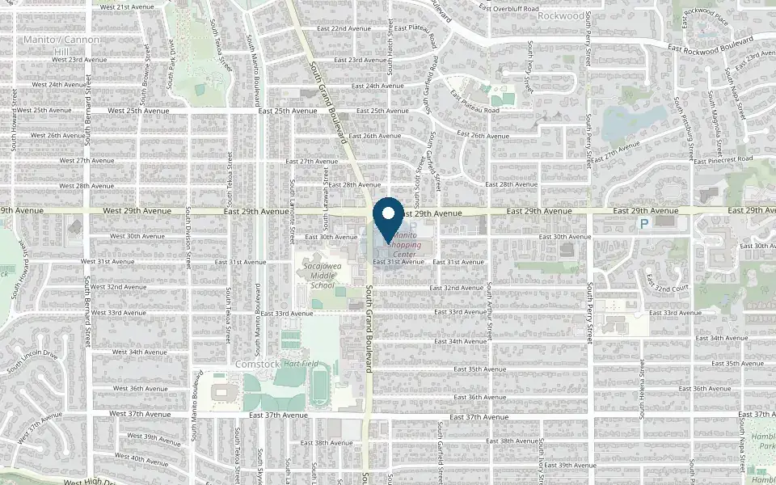
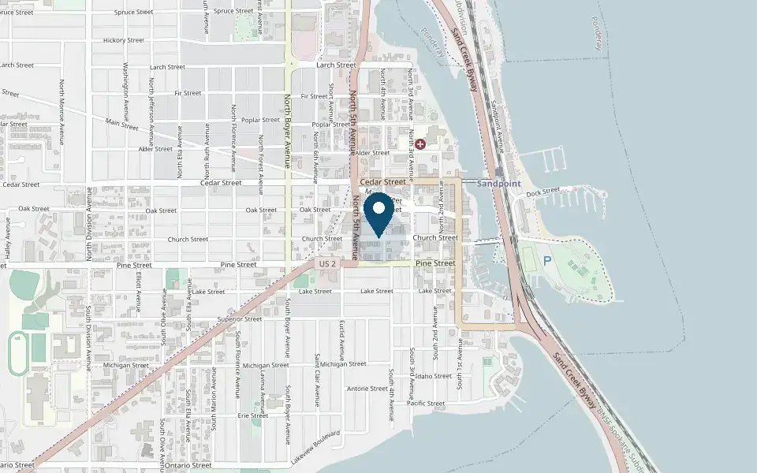
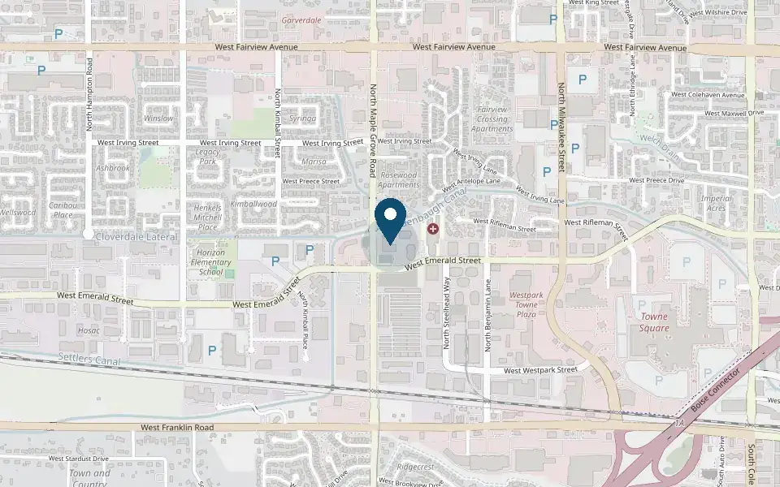

Washington
Spokane
South Hill, Eastern Washington
3009 S Grand BlvdSpokane, WA 99203
- Call to schedule. Dr. Smith sees patients here on set days.
- 208-400-5131 · Fax 800-994-7357

© OpenStreetMap contributorsHome / Locations
Hereditary Cancer Risk Clinic
See Dr. Smith in person at one of three offices, or by video visit if you live in Idaho or Washington. One phone number for every office: 208-400-5131.
Washington
South Hill, Eastern Washington
3009 S Grand Blvd
© OpenStreetMap contributorsIdaho
North Idaho
414 Church St
© OpenStreetMap contributorsIdaho
Treasure Valley, near Treasure Valley Hospital
8950 W Emerald St
© OpenStreetMap contributorsIdaho and Washington
A secure video visit with Dr. Smith from home, about 45 minutes, for patients in Idaho and Washington. Have your family cancer history handy, and upload your ID and insurance cards in the patient portal first.
Request an appointment
The office will contact you to find a time. For anything urgent, please call 208-400-5131.
Referring a patient? See For referring providers below.
For referring providers
Fax the referral and note the patient's preferred office. The office will contact the patient to schedule.
Spokane, WA · Sandpoint, ID · Boise, ID · Telehealth (Idaho and Washington)
Please don't send patient records through this website's form or chat.
What to send